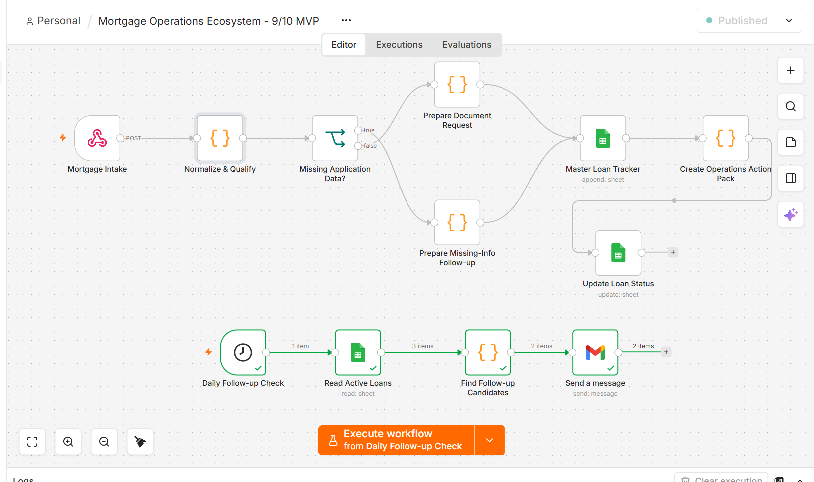
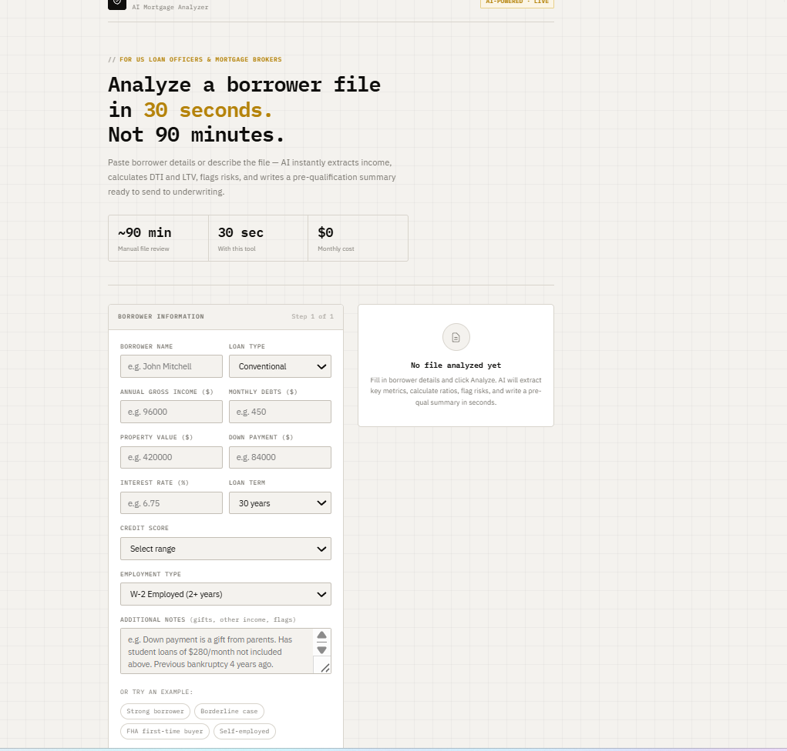
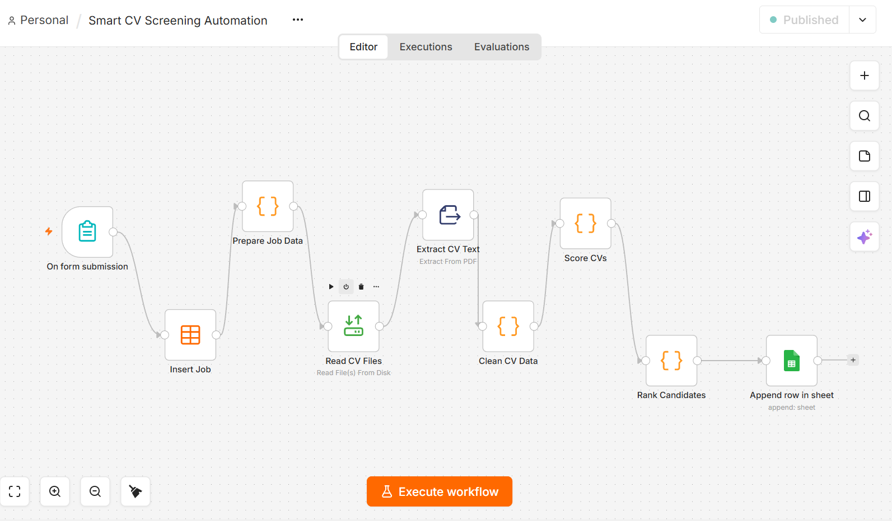
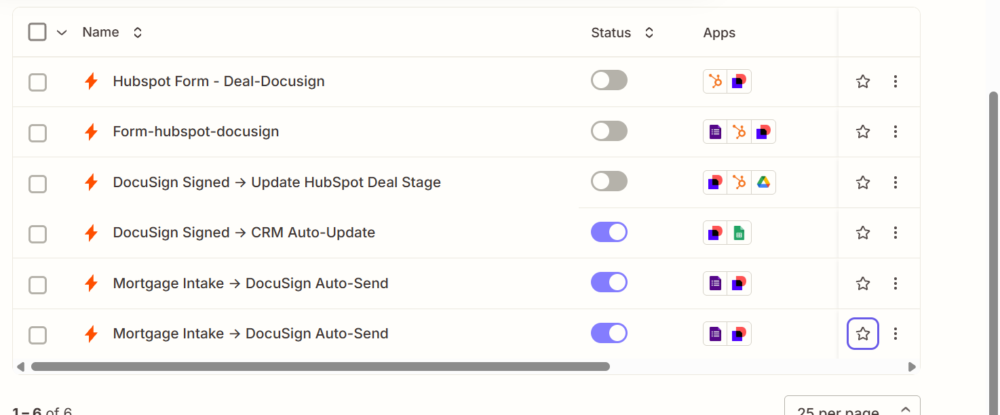
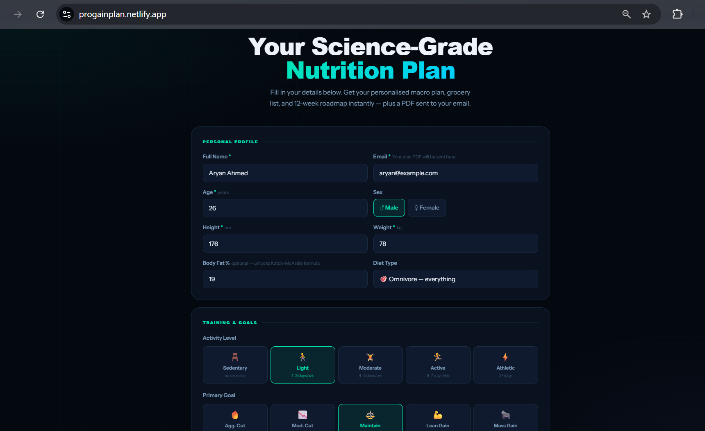
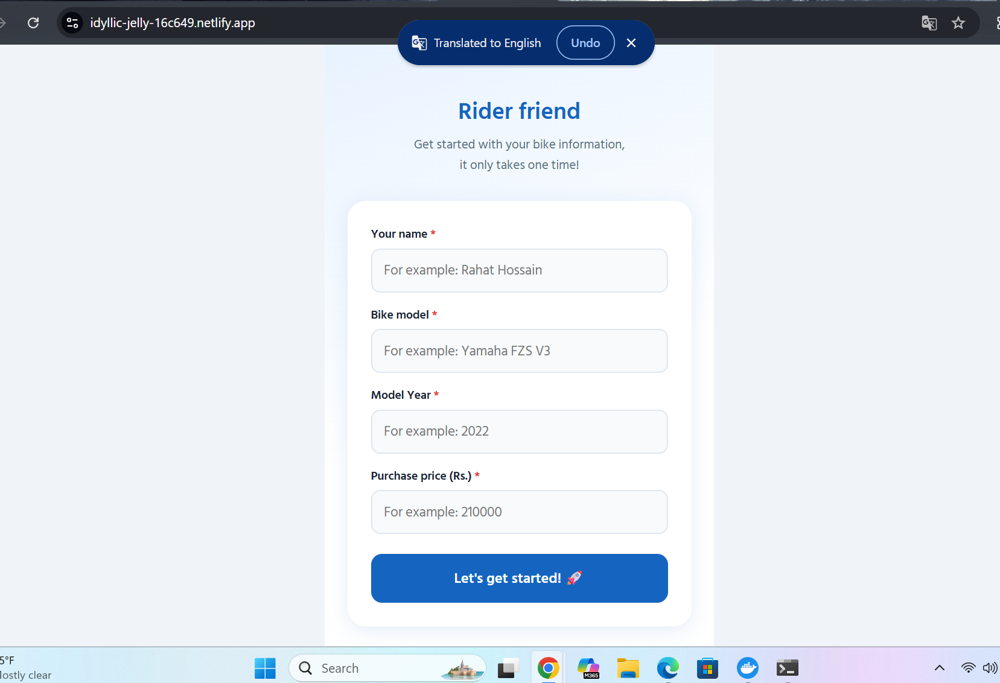

01 · FLAGSHIP SYSTEM
Mortgage Operations Ecosystem
n8n · Mortgage OperationsA multi-workflow mortgage operations system connecting intake, qualification, missing-data follow-up, loan tracking and daily operational follow-ups.
I design and build workflows that move data, automate documents, connect business systems and remove repetitive operational work.
Working applications, workflow screenshots and a Loom walkthrough. No invented clients or fabricated case studies.

A multi-workflow mortgage operations system connecting intake, qualification, missing-data follow-up, loan tracking and daily operational follow-ups.

A working borrower-analysis application built around mortgage-specific inputs and a fast pre-qualification workflow.

A batch recruitment workflow that reads CV PDFs, extracts candidate data, scores candidates, ranks them and writes results to Google Sheets.

A connected set of Zapier workflows covering mortgage intake, DocuSign sending, signed-status updates and CRM / Drive / Sheets handoffs.

A working nutrition-planning product that turns client intake into personalized macro targets, meal blueprint, grocery list, 12-week roadmap and PDF delivery.

A supporting product build demonstrating a focused form-led onboarding experience.
Business process, data, documents and automation—connected into systems that can actually be operated.
A multi-workflow mortgage operations system connecting intake, qualification, missing-data follow-up, loan tracking and daily operational follow-ups.
A working borrower-analysis application built around mortgage-specific inputs and a fast pre-qualification workflow.
A batch recruitment workflow that reads CV PDFs, extracts candidate data, scores candidates, ranks them and writes results to Google Sheets.
A connected set of Zapier workflows covering mortgage intake, DocuSign sending, signed-status updates and CRM / Drive / Sheets handoffs.
A working nutrition-planning product that turns client intake into personalized macro targets, meal blueprint, grocery list, 12-week roadmap and PDF delivery.
A supporting product build demonstrating a focused form-led onboarding experience.
Implementation-heavy roles where automation solves a real operational problem.
Especially strong fit for mortgage, lending, real estate, recruiting and document-heavy operations.
I focus on the operational layer: how information enters a business, where people make decisions, how documents move, where data gets duplicated, and what should happen automatically after each event.
My portfolio combines mortgage operations, CRM/document automation, n8n workflow engineering and product-style builds.